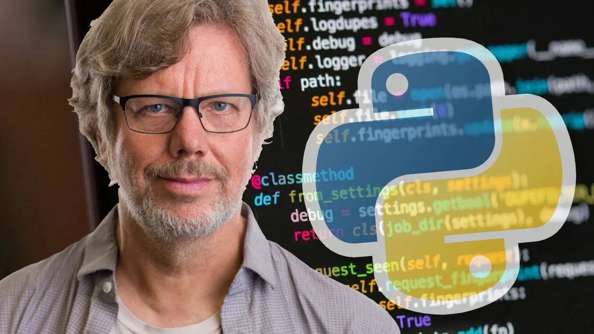
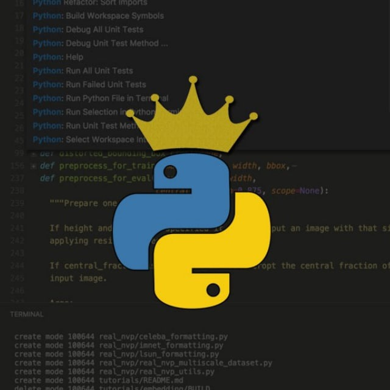

Python es uno de los lenguajes de programación dinámicos más populares, junto con Java, JavaScript, Go y C#. Aunque a menudo se le considera un lenguaje de scripting, en realidad es un lenguaje de propósito general. Actualmente, Python se utiliza en una gran variedad de ámbitos: desde simples scripts hasta servidores web de gran escala que ofrecen servicios ininterrumpidos 24/7. También se emplea en la programación de interfaces gráficas y bases de datos, en el desarrollo web tanto del lado del cliente como del servidor (con frameworks como Django o Flask) y en el testing de aplicaciones. Además, goza de gran aceptación en el ámbito científico, donde se desarrollan aplicaciones para supercomputadoras, al mismo tiempo que resulta accesible para niños y principiantes que están dando sus primeros pasos en la programación.
La historia del lenguaje de programación Python se remonta a finales de los años 80 y principios de los 90. Su implementación comenzó en diciembre de 1989, cuando Guido van Rossum, quien trabajaba en el Centrum Wiskunde & Informatica (CWI), un centro de investigación oficial en los Países Bajos, decidió iniciar el proyecto como un pasatiempo durante las vacaciones de Navidad. Van Rossum había formado parte del equipo que desarrolló el lenguaje ABC, el cual buscaba ser fácil de aprender y usar, pero que no logró trascender debido a las limitaciones del hardware de la época. A partir de esa experiencia, Van Rossum diseñó Python con la intención de mantener la simplicidad y facilidad de uso, pero agregando mayor potencia y flexibilidad. El nombre "Python" no proviene de la serpiente, sino de la afición de su creador al grupo de comedia británico Monty Python. Dentro de la comunidad, Guido van Rossum llegó a ser conocido como el Benevolente Dictador Vitalicio (Benevolent Dictator for Life, BDFL), ya que durante muchos años tuvo la decisión final sobre la dirección del lenguaje. En un inicio, Python fue desarrollado para el sistema operativo Amoeba, pero con el tiempo su popularidad creció hasta convertirse en uno de los lenguajes más usados en el mundo
Python 3.0 fue lanzado el 3 de diciembre de 2008. Durante un tiempo coexistieron las series Python 2.x y Python 3.x, ya que la primera se mantenía principalmente por razones de compatibilidad, mientras que la segunda introducía cambios profundos en el lenguaje. Para facilitar la transición, se lanzaron versiones en paralelo. Python 2.6 apareció al mismo tiempo que Python 3.0, incluyendo algunas de sus novedades y un modo de advertencias que resaltaba las características eliminadas en la nueva versión. Más tarde, Python 2.7, publicado en 2010 junto con Python 3.1 (junio de 2009), se convirtió en la última versión de la serie 2.x y en la más utilizada durante muchos años. Esta etapa de publicaciones en paralelo terminó con Python 3.2. El paso de Python 2 a Python 3 supuso una ruptura de compatibilidad hacia atrás. Esto significa que el código escrito en Python 2 no funcionaba directamente en Python 3 sin modificaciones. Entre los cambios más importantes estuvo el hecho de que print dejó de ser una instrucción y pasó a ser una función (print("Hola")), además de que todos los strings pasaron a manejarse como Unicode por defecto y se modificaron ciertos métodos de estructuras como los diccionarios. Para ayudar a los desarrolladores en este proceso, se creó la herramienta 2to3, capaz de convertir automáticamente gran parte del código de Python 2 a Python 3, aunque no siempre de manera perfecta. El equipo de Python recomendaba usarla para proyectos en transición, pero desaconsejaba mantener código ejecutándose en ambas versiones de forma simultánea.
Python 3.0, lanzado en diciembre de 2008, representó una versión con cambios importantes respecto a Python 2, incluso con la eliminación de la compatibilidad hacia atrás. Algunos de los cambios más relevantes fueron:
Hoy en día, Python es uno de los lenguajes de programación más influyentes y utilizados en el mundo tecnológico. Su importancia se refleja en la gran cantidad de sectores donde está presente, desde la educación hasta la industria. En el ámbito académico y formativo, Python es el lenguaje más recomendado para quienes dan sus primeros pasos en la programación, gracias a su sintaxis clara y sencilla. Universidades y escuelas lo incluyen como herramienta básica de enseñanza en computación, matemáticas e incluso en ciencias sociales. En el mundo empresarial, Python se ha convertido en una pieza fundamental. Grandes compañías como Google, Netflix, Facebook y Spotify lo utilizan para optimizar procesos, analizar datos y desarrollar nuevas soluciones tecnológicas. En la ciencia de datos, inteligencia artificial y aprendizaje automático, Python es prácticamente el estándar. Su capacidad para manejar grandes volúmenes de información, junto con librerías especializadas como NumPy, Pandas, TensorFlow o Scikit-learn, lo hacen indispensable en la investigación científica y el análisis predictivo. En la automatización y la ciberseguridad, Python destaca porque permite crear scripts que facilitan tareas repetitivas y sistemas de protección más avanzados. Además, en la actualidad es uno de los lenguajes más demandados en el mercado laboral. Aprender Python abre puertas a múltiples oportunidades profesionales, desde el desarrollo web hasta la investigación de vanguardia. En conclusión, Python es importante en la actualidad porque está en el centro de la innovación tecnológica, combina simplicidad con gran potencia y sigue marcando tendencia en los campos más avanzados de la informática.
